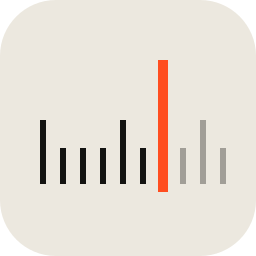
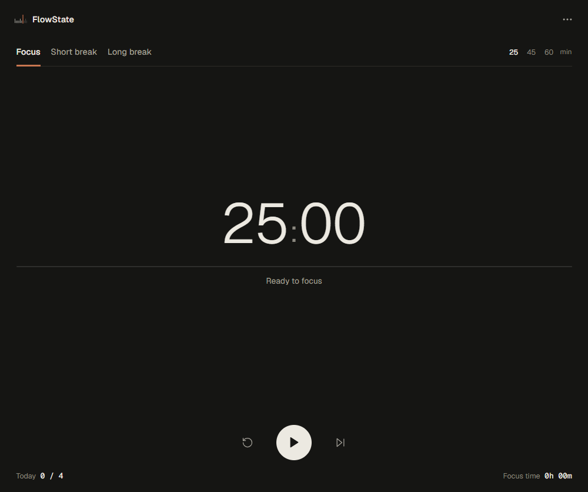
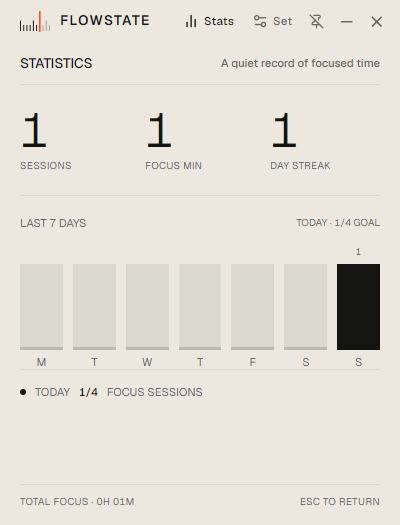
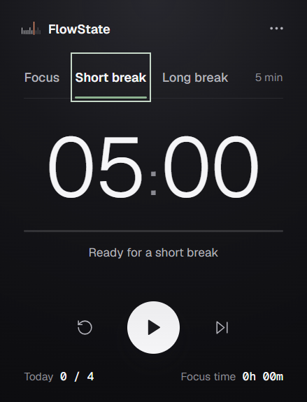

Focus
Start with 25, 45, or 60 minutes, or set a duration that fits the work.

FlowStateFlowState is a small desktop timer for getting into work, taking a break, and coming back without the extra machinery.
Download for Windows v1.0.0 · unsignedAlso available for macOS and Linux.

Enough structure to settle into a session, without turning your day into another system to manage.
Start with 25, 45, or 60 minutes, or set a duration that fits the work.
Set short and long breaks. Automatic starts are optional.
Keep the timer close or hide it to the tray; your session keeps going.

No account or sync service. FlowState stores timer settings and session activity locally.
Daily goals, recent activity, total focus time, completed sessions, and a current streak are there when you want them.
Short and long breaks are configurable, with optional automatic starts for breaks and focus sessions.

Current release: v1.0.0. Existing installer filenames are unchanged.
The installer is unsigned; Windows may show a SmartScreen warning.
AppImage · Debian / Ubuntu (.deb)
Packages target x86_64. Packaged behavior outside Windows has not been verified on physical systems.
The published v1.0.0 installers retain their original FLOWSTATE filenames and in-app casing.